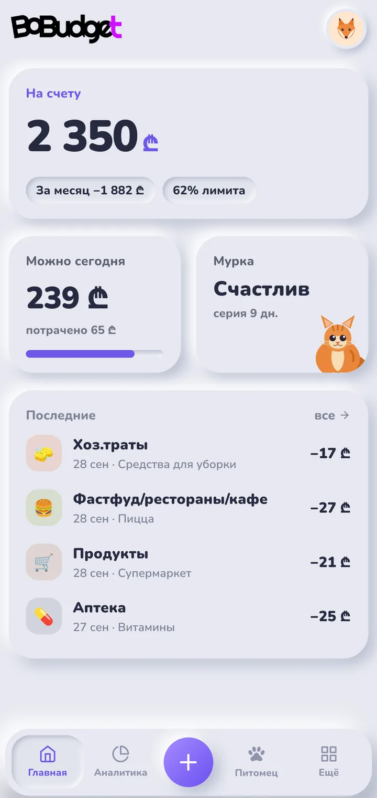
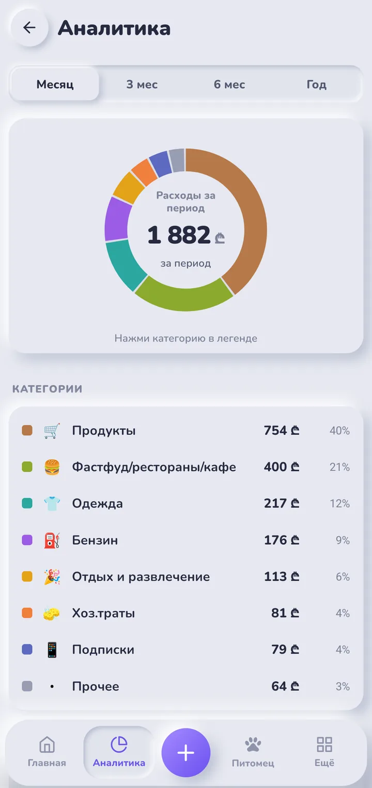
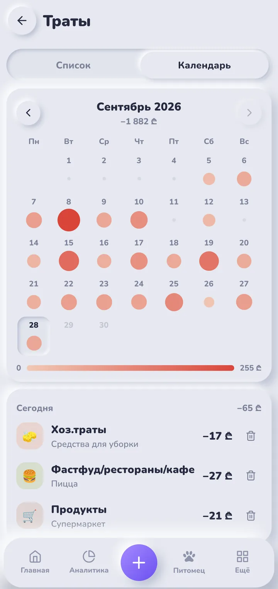
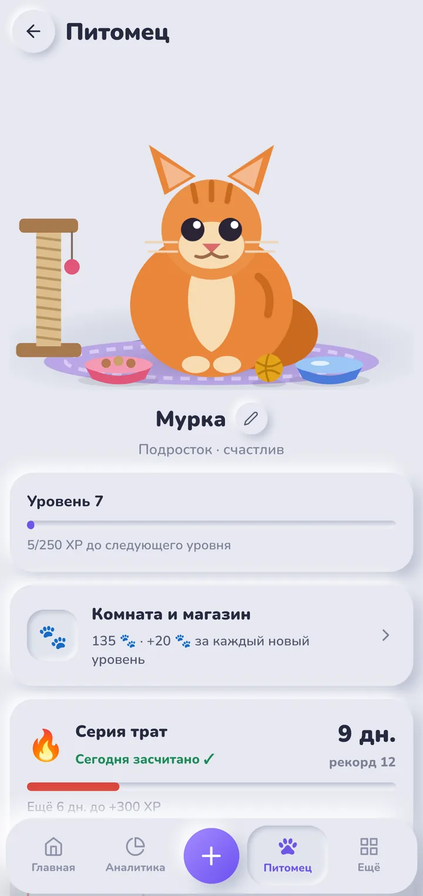
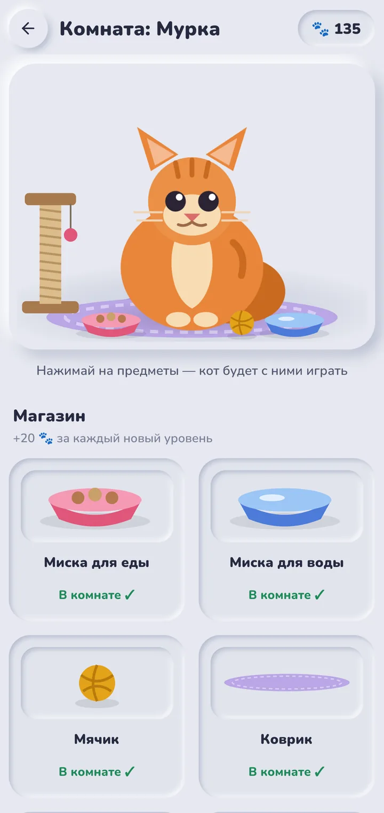
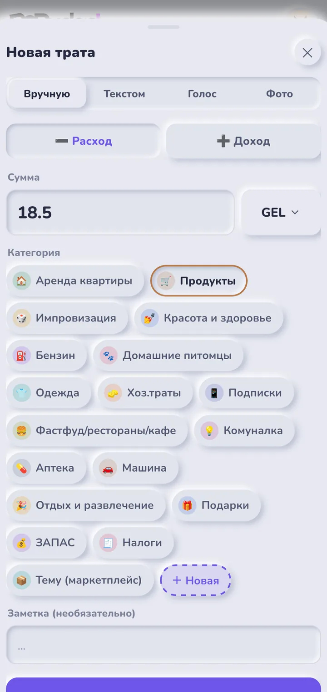

Учёт расходов, в который хочется записывать траты
Голосом, текстом или по фото чека — BoBudget сам разберёт суммы и разложит траты по категориям. А ваш кот следит, чтобы вы не забывали.

Запись за секунды
Самое скучное в учёте расходов — записывать. Поэтому в BoBudget это занимает пару секунд.
Голосом
«Кофе 5 лари и такси 12» — одна фраза, две траты, суммы и категории расставлены.
Текстом
Напишите как удобно, хоть несколько трат сразу — BoBudget поймёт.
По фото чека
Сфотографируйте чек — позиции распознаются автоматически.
ProКак это выглядит





Понятный бюджет
Не таблица ради таблицы, а ответ на вопрос «сколько я могу потратить сегодня».
Лимит на день
План на месяц превращается в сумму, которую спокойно можно потратить сегодня.
Календарь трат
Сразу видно, какие дни были дорогими и почему.
Аналитика
Категории с цветами, которые вы выбираете сами, и динамика по месяцам.
Регулярные платежи
Подписки, аренда, связь — напоминания и учёт без ручного ввода.
Копилки
Цели с прогрессом: отпуск, техника, подушка безопасности.
43 валюты
Трата в любой валюте пересчитывается по официальному курсу на её дату.
Питомец, который мотивирует
Каждая записанная трата кормит вашего кота. Он растёт вместе с вашей привычкой вести бюджет.
- Опыт и уровни — за каждую запись
- Серии дней — не пропускайте, и кот будет счастлив
- Лапки — валюта для покупок: лежанка, когтеточка, игрушки
- Комната кота — обставьте её по своему вкусу
Ваши данные — только ваши
Финансы — личное. BoBudget не показывает рекламу и не продаёт данные.
- PIN-код и биометрия — вход по отпечатку пальца или Face ID
- Шифрование AES-256 — заметки, тексты голосовых, имя и email шифруются до записи на сервер
- Без рекламы и трекеров — данные не передаются рекламным сетям
- Удаление в один шаг — аккаунт и все данные можно удалить в любой момент
BoBudget Pro
Основные функции бесплатны. Pro — для тех, кто хочет больше:
- Голосовой ввод без ограничений
- Распознавание фото чеков
- AI-разбор трат и советы раз в месяц
Подписка оформляется внутри приложения через Google Play или App Store и отменяется в любой момент.
Вопросы
Сколько это стоит?
Приложение бесплатное. Дополнительные возможности — в подписке BoBudget Pro.
Где хранятся мои данные?
На защищённом сервере в Европе. Личные поля шифруются, все соединения идут по HTTPS. Подробно — в политике конфиденциальности.
Как удалить аккаунт?
В приложении: Личный кабинет → Удалить аккаунт. Или без приложения — на странице удаления аккаунта.
Когда приложение появится в магазинах?
Сейчас идёт тестирование. BoBudget уже работает в Telegram — можно попробовать там.
Это финансовая консультация?
Нет. BoBudget — инструмент учёта: решения вы принимаете сами.